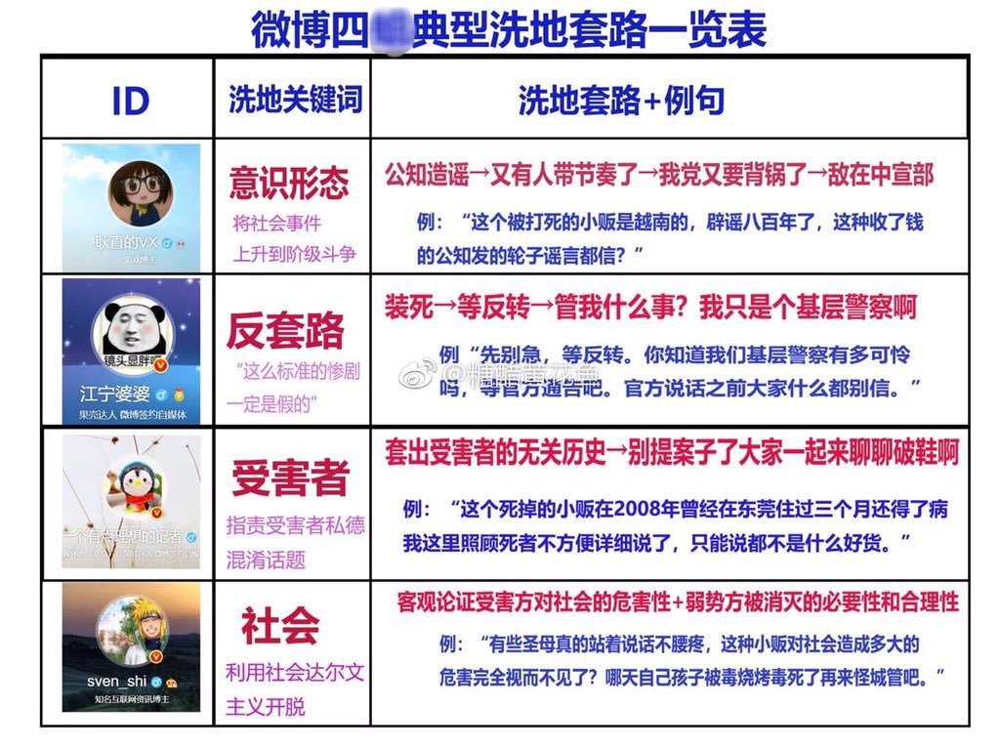

主要事迹 江宁婆婆：等反转 微博四蛆之首，利用其公权力的身份，为桂枝各种事件洗地，纳粹的喉舌辩护人，在微博有一批洗脑粉蛆簇拥，围绕在其周围发动网络暴力。 
苏底事件其实很简单，就是微博上有一个叫做苏底的用户做了这么一张“微博四蛆”的图。 然后里面的大V江宁不开心了，发文怼苏底。 江宁蛆逼迫一个十八岁的抑郁症女孩，挂起苏底姑娘的个人私隐，让粉丝叫小姑娘去死。 江宁公安在线发通报，江宁汪汪个人号在装人。 “大小号都不删评论”，“一夜没睡，现在还在外面淋雨，我也挺着急的”，笑鸟。再说一次，江宁X就是天朝特色私器公用的模板，以蓝V号的“信用”起家，说蓝V号所不能说的“个人意见”为朝廷背书洗地。这种公共权力/“个人言论”互相切换的情况几乎只在天朝独有。 僵狞蛆用公号发私言，又向私号导流量，之后用私号装公家顶着体制内的帽子散布所谓“内幕消息”，可以说是非常典型的恶心。 这种模式可是“人性化的社会主义喉舌”，我们看得恶心，可是受用的人很多。不然江宁X怎么能以区区一介民警享受不同的党宣级优待。 基础信息 档案编号 SCP-ZHINA-2019-34 所属阵营 赵蛆 微博蛆 名言警句 先别急，等反转。官方说话之前大家什么都别信 照片 真实姓名 王海丁 身份证号 610321198503040417 生日 19850304 家庭住址 南京市江宁区东山街道上元大街369号
(备注：户籍地址) 家庭住址 江苏省南京市江宁区河定桥金王府44栋1单元101
(备注：家庭地址) 手机号 13357728875 手机号 18652035760 微博 jnwj
(备注：江宁婆婆) 家人信息 王奕萱，身份证号：320121198411060023，手机号：13584002950、18652035760，户籍地址：江苏省南京市江宁区东山街道土山路4号，家庭住址：江苏省南京市江宁区新蕾公寓2栋101室，曾（现）工作单位：上海兴业银行财富管理中心，皮包公司：上海梓卿文化传播工作室（201707认定非正常经营户）
(备注：老婆) 照片
(备注：王奕萱)